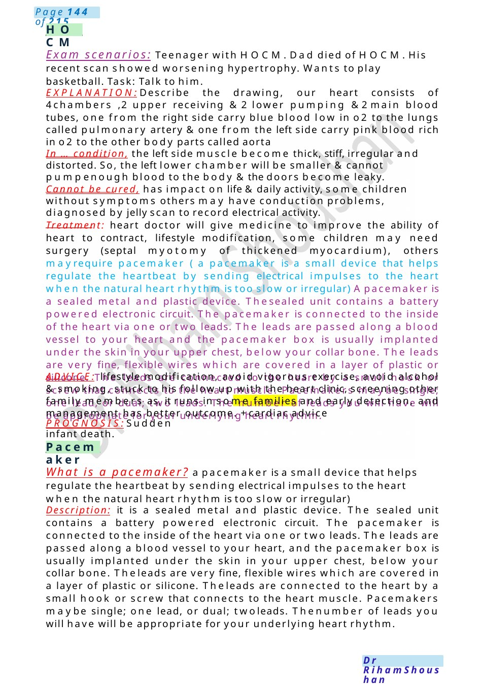
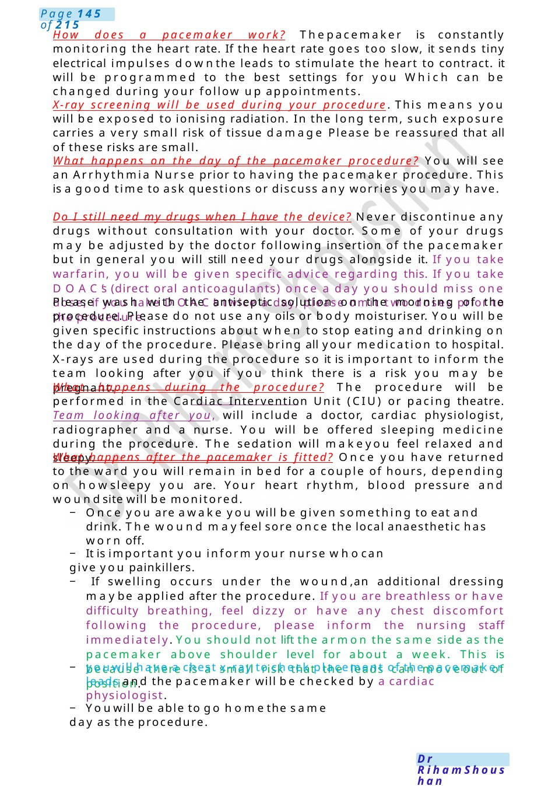
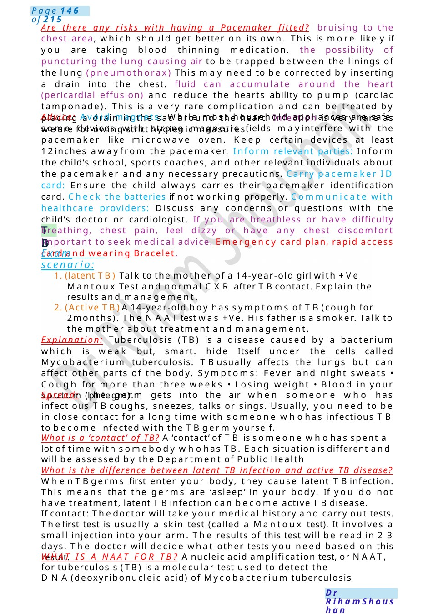

HOCM
Exam scenarios: Teenager with HOCM.Dad died of HOCM.His recent scan showed worsening hypertrophy. Wants to play basketball. Task: Talk to him. EXPLANATION:Describe the drawing, our heart consists of 4chambers ,2 upper receiving &2 lower pumping &2main blood tubes, one from the right side carry blue blood low in o2 to the lungs called pulmonary artery &one from the left side carry pink blood rich in o2 to the other body parts called aorta
Scenario Summary
Exam scenarios: Teenager with HOCM.Dad died of HOCM.His recent scan showed worsening hypertrophy. Wants to play basketball. Task: Talk to him. EXPLANATION:Describe the drawing, our heart consists of 4chambers ,2 upper receiving &2 lower pumping &2main blood tubes, one from the right side carry blue blood low in o2 to the lungs called pulmonary artery &one from the left side carry pink blood rich in o2 to the other body parts called aorta
Full Original Scenario

HOCM
Pacemaker
Exam scenarios: Teenager with HOCM.Dad died of HOCM.His recent scan showed worsening hypertrophy. Wants to play basketball. Task: Talk to him.
EXPLANATION:Describe the drawing, our heart consists of 4chambers ,2 upper receiving &2 lower pumping &2main blood tubes, one from the right side carry blue blood low in o2 to the lungs called pulmonary artery &one from the left side carry pink blood rich in o2 to the other body parts called aorta
In ... condition, the left side muscle become thick, stiff, irregular and distorted. So, the left lower chamber will be smaller &cannot pumpenough blood to the body &the doors become leaky.
Cannot be cured, has impact on life &daily activity, some children without symptoms others may have conduction problems, diagnosed by jelly scan to record electrical activity.
Treatment: heart doctor will give medicine to improve the ability of heart to contract, lifestyle modification, some children may need surgery (septal myotomy of thickened myocardium), others mayrequire pacemaker ( a pacemaker is a small device that helps regulate the heartbeat by sending electrical impulses to the heart when the natural heart rhythm is too slow or irregular) Apacemaker is a sealed metal and plastic device. Thesealed unit contains a battery powered electronic circuit. The pacemaker is connected to the inside of the heart via one or two leads. The leads are passed along a blood vessel to your heart and the pacemaker box is usually implanted under the skin in your upper chest, below your collar bone. The leads are very fine, flexible wires which are covered in a layer of plastic or silicone. The leads are connected to the heart by a small hook or screw that connects to the heart muscle. Pacemakers maybe single; one lead, or dual; two leads. The number of leads you will have will be appropriate for your underlying heart rhythm.
ADVICE: lifestyle modification, avoid vigorous exercise, avoid alcohol &smoking, stuck to his follow up with the heart clinic, screening other family members as, it runs in some families and early detection, and management has better outcome. +cardiac advice
PROGNOSIS:Sudden infant death.
What is a pacemaker? a pacemaker is a small device that helps regulate the heartbeat by sending electrical impulses to the heart when the natural heart rhythm is too slow or irregular)
Description: it is a sealed metal and plastic device. The sealed unit contains a battery powered electronic circuit. The pacemaker is connected to the inside of the heart via one or two leads. The leads are passed along a blood vessel to your heart, and the pacemaker box is usually implanted under the skin in your upper chest, below your collar bone. Theleads are very fine, flexible wires which are covered in a layer of plastic or silicone. Theleads are connected to the heart by a small hook or screw that connects to the heart muscle. Pacemakers maybe single; one lead, or dual; twoleads. Thenumber of leads you will have will be appropriate for your underlying heart rhythm.

How does a pacemaker work? Thepacemaker is constantly monitoring the heart rate. If the heart rate goes too slow, it sends tiny electrical impulses downthe leads to stimulate the heart to contract. it will be programmed to the best settings for you Which can be changed during your follow up appointments.
X-ray screening will be used during your procedure. This means you will be exposed to ionising radiation. In the long term, such exposure carries a very small risk of tissue damage Please be reassured that all of these risks are small.
What happens on the day of the pacemaker procedure? You will see an Arrhythmia Nurse prior to having the pacemaker procedure. This is a good time to ask questions or discuss any worries you may have.
Do I still need my drugs when I have the device? Never discontinue any drugs without consultation with your doctor. Some of your drugs may be adjusted by the doctor following insertion of the pacemaker but in general you will still need your drugs alongside it. If you take warfarin, you will be given specific advice regarding this. If you take DOAC’s (direct oral anticoagulants) once a day you should miss one dose; if you take DOAC’s twice a day, please omit two doses prior to the procedure.
Please wash with the antiseptic solution on the morning of the procedure. Please do not use any oils or body moisturiser. You will be given specific instructions about when to stop eating and drinking on the day of the procedure. Please bring all your medication to hospital. X-rays are used during the procedure so it is important to inform the team looking after you if you think there is a risk you may be pregnant.
What happens during the procedure? The procedure will be performed in the Cardiac Intervention Unit (CIU) or pacing theatre. Team looking after you, will include a doctor, cardiac physiologist, radiographer and a nurse. You will be offered sleeping medicine during the procedure. The sedation will makeyou feel relaxed and sleepy.
What happens after the pacemaker is fitted? Once you have returned to the ward you will remain in bed for a couple of hours, depending on howsleepy you are. Your heart rhythm, blood pressure and woundsite will be monitored.
− Once you are awake you will be given something to eat and drink. The wound mayfeel sore once the local anaesthetic has worn off.
− It is important you inform your nurse whocan give you painkillers.
− If swelling occurs under the wound,an additional dressing maybe applied after the procedure. If you are breathless or have difficulty breathing, feel dizzy or have any chest discomfort following the procedure, please inform the nursing staff immediately. You should not lift the armon the same side as the pacemaker above shoulder level for about a week. This is because there is a small risk that the leads can moveout of position.
− youwill have a chest x-ray to check placement of the pacemaker leads and the pacemaker will be checked by a cardiac physiologist.
− Youwill be able to go homethe same day as the procedure.

TB
Are there any risks with having a Pacemaker fitted? bruising to the chest area, which should get better on its own. This is more likely if you are taking blood thinning medication. the possibility of puncturing the lung causing air to be trapped between the linings of the lung (pneumothorax) This may need to be corrected by inserting a drain into the chest. fluid can accumulate around the heart (pericardial effusion) and reduce the hearts ability to pump (cardiac tamponade). This is a very rare complication and can be treated by placing a drain in the sac around the heart. Infection is very rare as we are following strict hygienic measures.
Advice: Avoid magnets: While most household appliances are safe, some devices with strong magnetic fields mayinterfere with the pacemaker like microwave oven. Keep certain devices at least 12inches awayfrom the pacemaker. Inform relevant parties: Inform the child's school, sports coaches, and other relevant individuals about the pacemaker and any necessary precautions. Carry pacemaker ID card: Ensure the child always carries their pacemaker identification card. Check the batteries if not working properly. Communicate with healthcare providers: Discuss any concerns or questions with the child's doctor or cardiologist. If you are breathless or have difficulty breathing, chest pain, feel dizzy or have any chest discomfort important to seek medical advice. Emergency card plan, rapid access card and wearing Bracelet.
Exam scenario:
1. (latent TB) Talk to the mother of a 14-year-old girl with +Ve Mantoux Test and normal CXR after TBcontact. Explain the results and management.
2. (Active TB)A14-year-old boy has symptoms of TB(cough for 2months). The NAATtest was +Ve. His father is a smoker. Talk to the mother about treatment and management.
Explanation: Tuberculosis (TB) is a disease caused by a bacterium which is weak but, smart. hide Itself under the cells called Mycobacterium tuberculosis. TBusually affects the lungs but can affect other parts of the body. Symptoms: Fever and night sweats • Cough for more than three weeks • Losing weight • Blood in your sputum (phlegm).
Spread: The germ gets into the air when someone who has infectious TBcoughs, sneezes, talks or sings. Usually, you need to be in close contact for a long time with someone whohas infectious TB to become infected with the TBgerm yourself.
What is a ‘contact’ of TB? A‘contact’ of TB is someone whohas spent a lot of time with somebody whohas TB. Each situation is different and will be assessed by the Department of Public Health
What is the difference between latent TB infection and active TB disease? WhenTBgerms first enter your body, they cause latent TBinfection. This means that the germs are ‘asleep’ in your body. If you do not have treatment, latent TBinfection can become active TBdisease.
If contact: Thedoctor will take your medical history and carry out tests. Thefirst test is usually a skin test (called a Mantoux test). It involves a small injection into your arm. The results of this test will be read in 2 3 days. The doctor will decide what other tests you need based on this result.
WHAT IS A NAAT FOR TB? Anucleic acid amplification test, or NAAT, for tuberculosis (TB) is a molecular test used to detect the DNA(deoxyribonucleic acid) of Mycobacterium tuberculosis